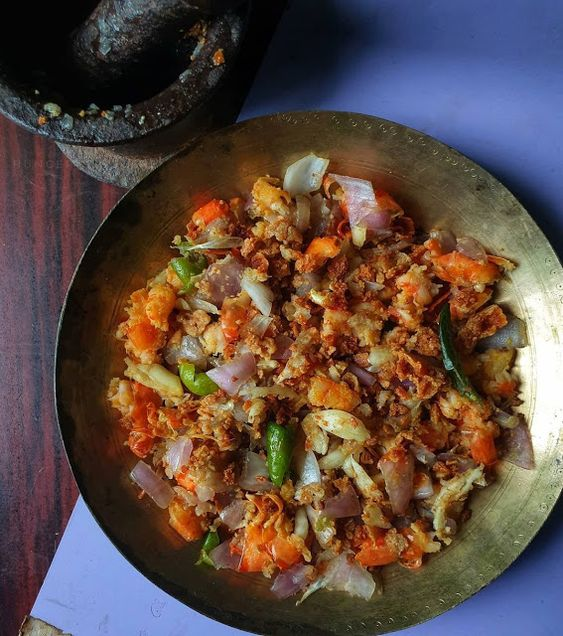
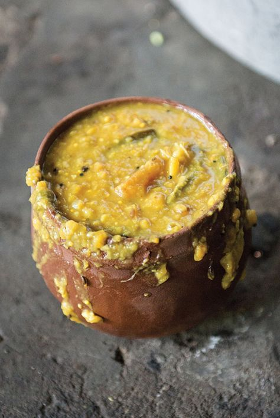
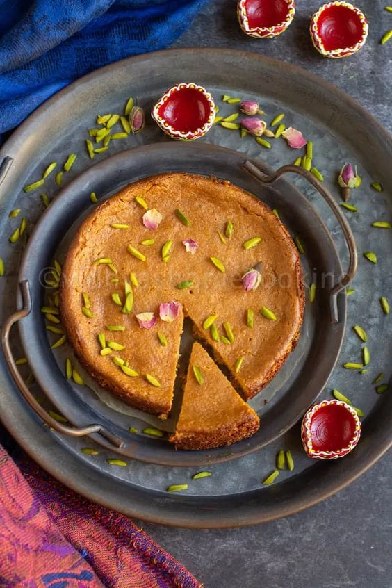

Famous Foods of Odisha
Pakhala Bhata

Pakhala Bhata Recipe:
- Ingredients:
- 2 cups cooked rice
- 4 cups water
- 1 teaspoon cumin seeds
- 1-2 green chilies, chopped
- 1 tablespoon lemon juice
- Salt to taste
- Fresh coriander for garnish
- Instructions:
- Soak the cooked rice in water for 4-5 hours or overnight.
- Add salt, cumin seeds, green chilies, and lemon juice to the soaked rice.
- Mix well and garnish with fresh coriander.
- Serve chilled with fried or mashed vegetables.
Dalma

Dalma Recipe:
- Ingredients:
- 1 cup split yellow lentils (moong dal)
- 1 potato, diced
- 1 carrot, diced
- 1 brinjal, diced
- 1 tomato, chopped
- 1 teaspoon turmeric powder
- 1 teaspoon cumin seeds
- 2-3 dried red chilies
- 1 tablespoon ghee
- Salt to taste
- Fresh coriander for garnish
- Instructions:
- Boil the lentils with turmeric powder and salt until soft.
- Add the diced vegetables and cook until tender.
- In a separate pan, heat ghee and add cumin seeds and dried red chilies for tempering.
- Pour the tempering over the dalma and mix well.
- Garnish with fresh coriander and serve hot with rice.
Chhena Poda

Chhena Poda Recipe:
- Ingredients:
- 500g fresh paneer (chhena)
- 1 cup sugar
- 1/2 cup semolina (sooji)
- 1 teaspoon cardamom powder
- 1/2 cup chopped dry fruits
- Ghee for greasing
- Instructions:
- Mix paneer, sugar, semolina, cardamom powder, and chopped dry fruits in a bowl.
- Grease a baking dish with ghee and pour the mixture into it.
- Bake in a preheated oven at 180°C for 30-40 minutes or until the top turns golden brown.
- Let it cool, then cut into slices and serve.